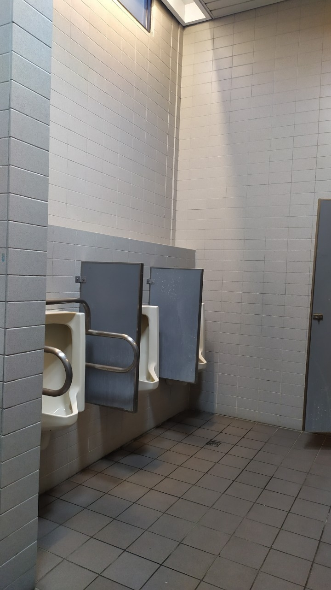

B1
這是一館一樓的廁所，乾淨整潔，和三館的一樓廁所一樣，地板採用了藍白相間的海洋風格配色，可惜牆面沒有一起變化，不然會更好，洗手台的部分，水龍頭的長度和洗手台的深度不搭，這也是許多洗手台的通病，明明有著寬敞的洗手台，但是因為太短的水龍頭，導致使用者在洗手時可能會需要非常往前靠，甚至手還會碰到洗手台，實屬一大敗筆。
B2
二館一樓的廁所，是唯一有在外部做額外裝飾的廁所，在室內的部分，木紋地板和石紋的壁面非常搭，也是少數配有無障礙廁所的地方，稍微可惜的地方在於管線配置上，這廁所的水流量非常的少，水壓嚴重不足
Dorm 1
這是6館的廁所，墻面和地面統一採用的是防水瓷磚的材料，同時瓷磚的顏色也是深淺結合，深藍搭配淺灰加上淡淡的黃色光纖，很容易給人一種乾淨的動態感同時也能看到其加裝了非常貼心的無障礙設施。從細節上看，燈管的佈置也很講究，並沒有安裝在天花板的正中央，而是靠在邊緣而傾斜打光，是一個帶有創新色彩的加分項。略有瑕疵的是，整個空間佈局有少許不合理之處，這也是很多館內廁所的通病：門打開之後“一望見底”，而沒有略微遮擋的地方，但從這個空間來看，其實是可以是佈置出遮擋墻等空間結構。
B5
五館的廁所是以整館來說最為讓人感到舒暢的，簡潔的白色磁磚，白色洗手台，鵝黃色的門，整體搭配都令人感到宜人，無不違和感。五館廁所的特點是廁所不管是幾樓，都是一樣的設計，並不因樓層而有所分別，和諧一致的雅緻白色調。
B6

這是6館的廁所，墻面和地面統一採用的是防水瓷磚的材料，同時瓷磚的顏色也是深淺結合，深藍搭配淺灰加上淡淡的黃色光纖，很容易給人一種乾淨的動態感同時也能看到其加裝了非常貼心的無障礙設施。從細節上看，燈管的佈置也很講究，並沒有安裝在天花板的正中央，而是靠在邊緣而傾斜打光，是一個帶有創新色彩的加分項。略有瑕疵的是，整個空間佈局有少許不合理之處，這也是很多館內廁所的通病：門打開之後“一望見底”，而沒有略微遮擋的地方，但從這個空間來看，其實是可以是佈置出遮擋墻等空間結構。
B7
採用的是瓷磚木質的經典商務簡約風格底下的木櫃既能安置清潔工具，又能充當洗手台的底部裝飾，給人一種既乾淨又溫暖的感覺，可謂是一舉兩得。同時非常細節的增加了補光的小燈和隱藏燈帶，在總體的色彩氛圍中有提供了一種明亮的層次感和高級感。更讓人驚訝的是，為了不使整個氛圍太過於簡潔以至於“冷感”，設計者很貼心地在中央加裝了植株，洗手液盒抽取式紙巾，進一步增加了其生機動感，讓人看上去不再單調，設計高超。
B3
這是三館二樓以上的廁所，和一樓的設計完全不一樣，從室內的設計來看，也有著極大的差異，同時環境的維護似乎也較為懈怠，可見一樓做為門面，想必得到了更多的資源用來維護，不過我雖然我能理解這個做法，但並不是非常認同，一樓是給客人用的，二樓以上則是長期在這裡工作、上課的老師與學生在用，若說經費不足的話，二樓以上至少也要做到整潔乾淨，不能差距那麼多。